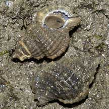
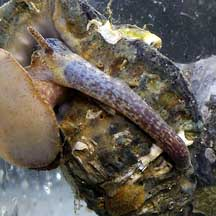
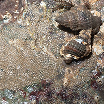
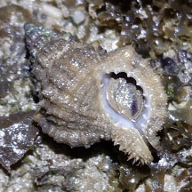

|
|
| shelled snails text index | photo index |
| Phylum Mollusca > Class Gastropoda > Family Ranellidae |
| Common
triton snail Gyrineum natator Family Ranellidae updated Sep 2020 Where seen? This small chunky snail is sometimes seen under stones on our Northern shores. Sometimes a pair might be seen under one stone. Features: 3-4cm. Thick shell with a thick ridge along the length and spirals of beaded ridges. Shell opening wide with a scalloped inner edge. It has a short siphonal canal. Shell colour beige or brown, sometimes with faint broad spirals of darker brown. Operculum dark and tear-drop shaped. Body pale with dark mottled patterns. What does it eat? The snail has all the makings of a voracious predator: a long proboscis and large, acid-secreting glands. However, it seems those in Singapore eat mainly algae. Other gyrineum snails elsewhere may eat sponges, hydroids, worms and clams. They may spray or inject an anaesthetic to paralyse their prey. Some tear off bits of flesh with their radula, while others liquify the prey's flesh then suck up the soup with their proboscis. One study suggests that the snail uses sulphuric acid to drill large holes in oysters and to attack other prey only when more easily obtained food is not available. It may also be used in defence. |
 Pulau Sekudu, Sep 07 |
 The snail has a long proboscis. Pulau Sekudu, Jan 05 |
 Under a stone: Laying eggs? East Coast Park, Aug 11 |
*Species are difficult to positively identify without close examination.
On this website, they are grouped by external features for convenience of display.
| Common triton snails on Singapore shores |
On wildsingapore
flickr
|
| Other sightings on Singapore shores |
 |
|
References
|